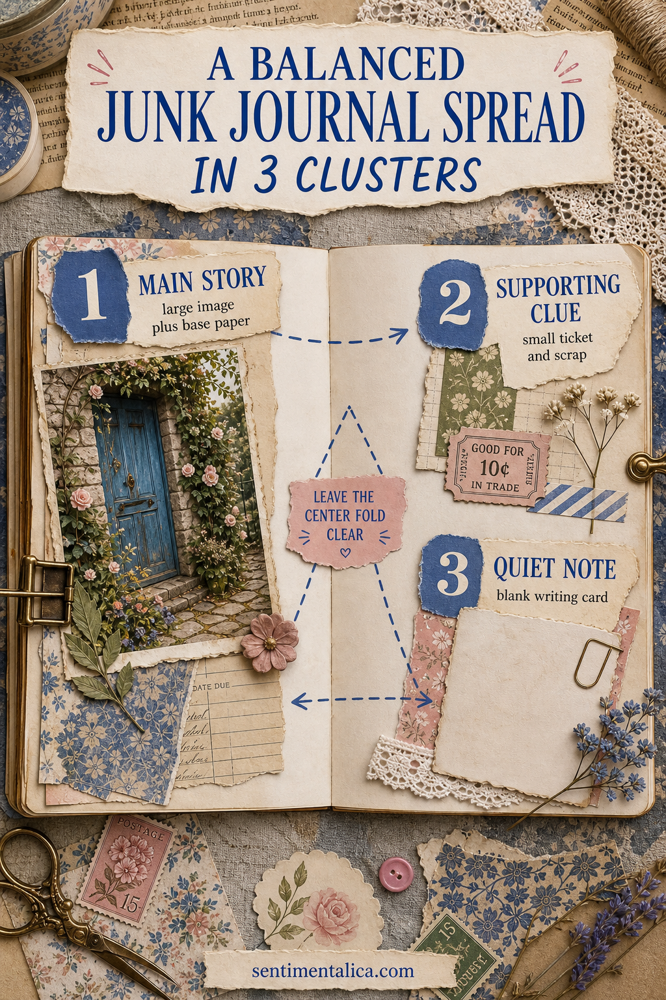
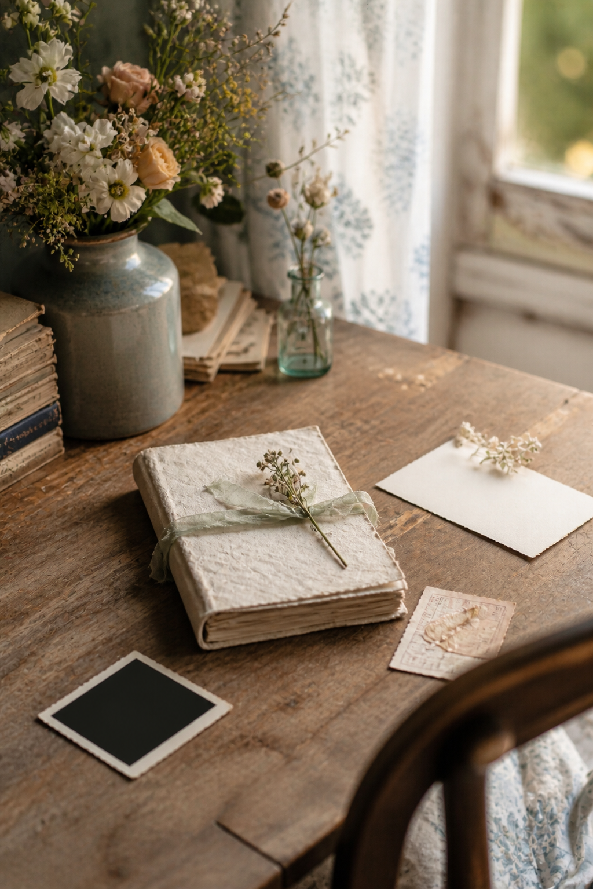

When a junk journal spread feels scattered, the problem is often not the papers themselves. Every piece is asking for equal attention. Three clusters give each element a job and create a path the eye can follow.

Choose the main story first
Pick one image, photograph, letter fragment, or piece of patterned paper to carry the mood. Give it the largest area and place it away from the center fold. Add one base paper beneath it, slightly offset, so the cluster feels grounded rather than pasted down alone.
Do not decorate every corner of this group. A little open edge lets the eye understand where the story begins.
Build a smaller supporting clue
Across the spread, place a ticket, label, small scrap, or date. It should explain or echo the main story without competing with it. Repeat one color or texture from the first cluster to connect them.
Keep this group about half the visual weight of the main one. If it feels equally loud, remove a layer or reduce the contrast.

Protect a quiet note
The third cluster is for writing. Use a blank card, small tag, or lightly patterned area with enough room for a date and several lines. It can be the smallest group, but it should remain easy to find and use.
Your handwriting completes the triangle. Without it, the spread may look arranged but not remembered.
Leave the fold clear
Do not use the center as a fourth cluster. Keep thick embellishments, wet glue, and stiff papers away from the gutter so the journal opens naturally. A clear fold also creates breathing room between the two sides.
Test the triangle before gluing
Place a finger on each cluster. The three points should form an uneven triangle rather than a straight line. Turn one label, move one group higher, or shift the writing card inward until your gaze travels around the page instead of leaving it.
Photograph the dry arrangement, then glue the largest pieces first. The photo lets you rebuild calmly without adding unnecessary filler.
If the spread still feels busy
Remove the smallest repeated decorations before changing the main pieces. Match no more than one color, one texture, and one shape across clusters. Cream paper can separate strong patterns, while translucent paper can soften a piece you still want to keep.
Adjust the formula for different memories
For a travel page, let the main story be a photograph, the clue a ticket, and the quiet note a short route description. For a family page, use a copied recipe, one label, and a card naming who was present. For an ordinary-day spread, a receipt can lead while a packaging scrap and one honest sentence complete the triangle.
The structure stays the same even when the materials change. That makes it useful when you want variety without solving the whole layout again.
Check the spread when it is closed
Before finishing, close the journal without pressing. If one cluster creates a hard lump, move its thickest piece toward the outer edge or remove a layer. Open the spread again and write on the quiet card. A balanced composition should also remain comfortable to use.
Balance does not mean symmetry. It means every element has a clear relationship to the memory, and the page still gives your eye somewhere to rest.
Image note: Some visuals in this article were created with AI and curated by Sentimentalica.